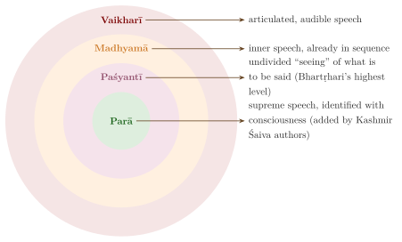
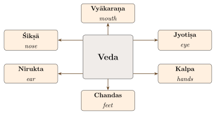
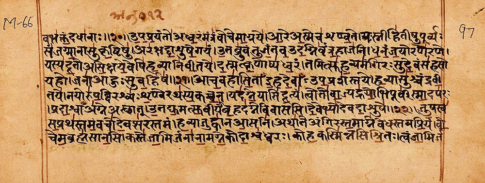

Chapter 1: Introduction: The Indian Sciences of Language¶
catvāri vāk parimitā padāni tāni vidur brāhmaṇā ye manīṣiṇaḥ
guhā trīṇi nihitā neṅgayanti turīyaṃ vāco manuṣyā vadanti
Speech is measured in four quarters; the wise Brahmins know them. Three, set down in secret, do not stir; the fourth part of speech is what humans speak.
— Ṛgveda 1.164.45
1.1 Speech in the Vedic Hymns¶
Reflection on language in South Asia is as old as its oldest surviving text. The hymns of the Ṛgveda, whose core was composed in the north-west of the subcontinent in roughly 1500–1200 BCE, already treat speech (vāc) as a power to be praised, and the poets show a sharp awareness of their own craft: of fitting words together, of naming, and of the difference between ordinary and inspired utterance. The hymns themselves give no dates. The usual range rests on the relative order of the Vedic and early Buddhist literature, on the close kinship of Vedic with the Old Iranian of the Avesta, on the Indo-Aryan divine names in a Mitanni treaty of the 14th century BCE from northern Syria, and on archaeology; the evidence, and the much earlier dates proposed in popular writing, are examined in Volume 1, Veda Prakāśa. In the hymn known as the Vāk Sūkta (Ṛgveda 10.125), Speech herself speaks in the first person:
Ṛgveda 10.125.1
ahaṃ rudrebhir vasubhiś carāmy aham ādityair uta viśvadevaiḥ
aham mitrāvaruṇobhā bibharmy aham indrāgnī aham aśvinobhā
“I move with the Rudras and the Vasus, I with the Ādityas and the All-Gods. I bear both Mitra and Varuṇa, I Indra and Agni, I the two Aśvins.”
Another hymn (Ṛgveda 10.71), addressed to Bṛhaspati, the lord of sacred speech, describes the first act of language as the giving of names:
Ṛgveda 10.71.1
bṛhaspate prathamaṃ vāco agraṃ yat prairata nāmadheyaṃ dadhānāḥ
yad eṣāṃ śreṣṭhaṃ yad aripram āsīt preṇā tad eṣāṃ nihitaṃ guhāviḥ
“O Bṛhaspati, when they first set in motion the beginning of speech, giving names, what was best and spotless in them, hidden in secret, was revealed through love.”
The second verse of the same hymn, which compares the wise who fashion speech with their minds to people winnowing barley-meal through a sieve, was later quoted by Patañjali in the introduction to his Mahābhāṣya as a Vedic warrant for the study of grammar (Chapter 7).
1.1.1 The “four quarters” of speech¶
The verse quoted at the head of this chapter (Ṛgveda 1.164.45) comes from one of the most enigmatic hymns of the collection, and it has been read in many ways. Its original sense is obscure. Later authors each found their own doctrine in it:
-
Patañjali, in the opening section of the Mahābhāṣya, reads the “four quarters” as the four classes of words recognised by grammarians: nouns (nāman), verbs (ākhyāta), preverbs (upasarga) and particles (nipāta). In the same passage he gives a grammatical reading of another riddle verse, Ṛgveda 4.58.3, whose “four horns” and “seven hands” become the four word classes and the seven nominal cases.
-
The grammarian-philosopher Bhartṛhari (5th century CE) distinguished three levels of speech: paśyantī (“seeing”, undifferentiated), madhyamā (“middle”, the sequenced but inner form) and vaikharī (articulated, audible speech). He did not himself posit a fourth level above these.
-
Philosophers of the Kashmir Śaiva traditions, from Somānanda and Utpaladeva (9th–10th centuries) to Abhinavagupta (c. 950–1016), added a fourth and highest level, parā vāc (“supreme speech”), identified with the consciousness of Śiva. Somānanda in fact criticised Bhartṛhari for making paśyantī the highest level.
The four-level scheme in Figure 1.1 is therefore the later, Śaiva form of the doctrine, not something that can be read directly out of the Vedic verse.

Speech is also central to the Brāhmaṇas and Upaniṣads. The Śatapatha Brāhmaṇa makes Vāc the partner of Prajāpati in creation; the Bṛhadāraṇyaka Upaniṣad (4.1.2) has Yājñavalkya report the teaching that “speech is the highest brahman”; and the Chāndogya Upaniṣad (7.2.1) presents speech as the means by which the Vedas and every other branch of knowledge are made known. The Śatapatha Brāhmaṇa (3.2.1.23–24) also tells how the Asuras were defeated because they mispronounced a ritual cry, a story that Patañjali later turned into an argument for the study of grammar (Chapter 7). These passages show that correctness of speech was bound up with ritual efficacy and with social status from the beginning, a theme that recurs throughout this volume.
1.2 Śabdavidyā: The Discipline Defined¶
Śabdavidyā, “the science of the word”, is the name the Buddhist scholastic tradition gave to grammar and linguistics. It is the first of the five “fields of knowledge” (pañca vidyāsthānāni) in which a learned Mahāyāna monk was expected to be trained, alongside logic (hetuvidyā), medicine (cikitsāvidyā), the arts and crafts (śilpakarmasthānavidyā) and the inner science of the Buddhist teaching (adhyātmavidyā). The Chinese pilgrims Xuanzang and Yijing, who studied in India in the 7th century, describe how grammar was taught to beginners in this scheme.
Brahmanical classifications of learning place language at the heart of the six auxiliary sciences of the Veda (the Vedāṅgas) and include grammar among the fourteen or eighteen “seats of knowledge” (vidyāsthānas): the four Vedas, the six Vedāṅgas, Purāṇa, Nyāya, Mīmāṃsā and Dharmaśāstra, to which some lists add medicine, archery, music and polity. Jain scholars, Tamil grammarians and, later, Persian lexicographers in India each built their own sciences of language. In this volume “Śabda Vidyā” is used broadly, for all of these traditions (Table 1.1).
| Branch | Sanskrit name | Scope |
|---|---|---|
| Phonetics | śikṣā, prātiśākhya | Articulation, accent and recitation (Chapter 2) |
| Prosody | chandas | Metres and their combinatorics (Chapter 3) |
| Semantic explanation | nirukta | Explanation of Vedic words; the Nighaṇṭu (Chapter 4) |
| Grammar | vyākaraṇa | Derivation of words and sentences by rule (Chapters 5–7) |
| Philosophy of language | śabdatattva, sphoṭa theory | Word, sentence and meaning (Chapter 8) |
| Middle Indo-Aryan grammar | prākṛta-vyākaraṇa | Pali, Prakrit and Apabhraṃśa (Chapter 9) |
| Dravidian grammar | Tamil ilakkaṇam | The Tolkāppiyam; the later grammars of Tamil, Kannada, Telugu and Malayalam (Chapters 10 and 11) |
| Writing | lipi | Scripts and inscriptions (Chapter 12) |
| Lexicography | kośa, nighaṇṭu | Synonym lists and dictionaries (Chapters 4, 13) |
1.3 The Vedāṅga Framework¶
Four of the six Vedāṅgas are sciences of language: phonetics (śikṣā), grammar (vyākaraṇa), metre (chandas) and semantic explanation (nirukta). The other two are ritual procedure (kalpa) and calendrical astronomy (jyotiṣa). A well-known pair of verses in the Pāṇinīya Śikṣā assigns each to a part of the body of the Veda:
Pāṇinīya Śikṣā 41–42 (numbering varies between recensions)
chandaḥ pādau tu vedasya hastau kalpo ’tha paṭhyate
jyotiṣām ayanaṃ cakṣur niruktaṃ śrotram ucyate
śikṣā ghrāṇaṃ tu vedasya mukhaṃ vyākaraṇaṃ smṛtam
tasmāt sāṅgam adhītyaiva brahmaloke mahīyate
“Metre is the feet of the Veda, ritual is said to be its hands; astronomy is its eye, Nirukta is called its ear; phonetics is the nose of the Veda, grammar is held to be its mouth. Therefore only one who studies the Veda with its limbs is honoured in the world of Brahman.”

The image (Figure 1.2) is apt. The Vedāṅgas grew out of the practical need to recite, understand and use the Vedic texts correctly in ritual, at a time when the language of the hymns was becoming archaic. Their methods, however, soon outgrew that purpose. Pāṇini’s grammar describes the everyday Sanskrit of educated speakers of his own day as well as Vedic usage; the prosodists’ techniques of enumeration became part of Indian mathematics; and the phonetic analysis of the Prātiśākhyas shaped the order of the letters in every script derived from Brāhmī.


1.3.1 One verse, four sciences¶
How the four linguistic Vedāṅgas worked together can be seen by taking a single Vedic verse, such as the first verse of the Ṛgveda, agnim īḷe purohitam, “I praise Agni, the household priest”. Phonetics (śikṣā) and the Prātiśākhya of the Ṛgveda tell the reciter how each sound is articulated, where the accents fall, and how the separate words of the padapāṭha (agnim | īḷe | puraḥ-hitam) combine in the continuous text. Metre (chandas) identifies the line as one of the three eight-syllable lines of a gāyatrī. Grammar (vyākaraṇa) explains agnim as the accusative singular of agni, īḷe as a first person singular middle present of the root īḍ “praise” (with the Ṛgvedic ḷ for intervocalic ḍ), and purohita as a compound of puras “in front” and hita “placed”. The Nirukta explains the meaning and the reason for the names: Yāska discusses why Agni is called Agni and why the priest is “placed in front”. The ritual science (kalpa) then tells when and how the verse is used. Each science answered a different question about the same text.
1.4 Historical Development: An Overview¶
The Indian linguistic traditions span well over two millennia. The dates below follow the ranges accepted in current scholarship; many are approximate, and traditional dates, where they differ, are noted as such. For the Sanskrit grammatical literature as a whole, Scharfe (1977) and Cardona (1976) remain the standard surveys.
1.4.1 Vedic foundations (before c. 400 BCE)¶
The earliest linguistic analysis is implicit in the padapāṭha, the “word-by-word” text of the Ṛgveda attributed to Śākalya, which separates each word of the continuous text and analyses compounds. The Prātiśākhyas, phonetic manuals attached to particular Vedic schools, state the rules for converting the word-by-word text into continuous recitation. Their dates are uncertain; the surviving texts are probably later than Pāṇini in their present form, but they preserve older doctrine. The Nirukta of Yāska, a commentary on a Vedic word-list (the Nighaṇṭu), is generally placed before Pāṇini, perhaps in the 5th century BCE or somewhat earlier. Yāska already cites more than a dozen earlier authorities, so a lively tradition of grammatical and semantic debate existed before him.
1.4.2 The classical grammarians (c. 4th century BCE – 2nd century BCE)¶
- Pāṇini
- (c. 4th century BCE; some scholars prefer the 5th) composed the Aṣṭādhyāyī (“Eight Chapters”), a grammar of almost 4,000 rules that derives the forms of Sanskrit from roots, suffixes and endings by an explicit, ordered system. Tradition places him at Śalātura in Gandhāra, in the north-west.
- Kātyāyana
- (c. 3rd century BCE) wrote vārttikas, critical notes that test Pāṇini’s rules, propose additions and point out defects.
- Patañjali
- (mid-2nd century BCE) composed the Mahābhāṣya (“Great Commentary”), a discussion of Pāṇini’s rules and Kātyāyana’s notes in lively dialogue form.
Later grammarians called these three the “three sages” (munitraya) and spoke of “the grammar of the three sages” (trimuni vyākaraṇam). On the conventional rule of the tradition, where they disagree the later authority prevails.
1.4.3 Philosophy of language (c. 5th–10th centuries CE)¶
Bhartṛhari (5th century CE) turned the grammarians’ reflections on the word, the sentence and meaning into a full philosophy of language in his Vākyapadīya (Chapter 8). His contemporaries and successors among the Buddhist logicians (Dignāga, c. 480–540; Dharmakīrti, 7th century), the Mīmāṃsakas (Kumārila and Prabhākara, 7th century) and the Naiyāyikas (Jayanta Bhaṭṭa, 9th century) debated his views for centuries (Matilal 1990; Bronkhorst 2011).
1.4.4 Commentaries and new grammars (c. 5th–18th centuries)¶
Pāṇini’s grammar was explained in a long series of commentaries, from the Kāśikā of Jayāditya and Vāmana (7th century) to Bhaṭṭoji Dīkṣita’s topical rearrangement of the rules, the Siddhāntakaumudī (early 17th century), and the works of Nāgeśa Bhaṭṭa (c. 1670–1750). Beside the Pāṇinian school, Buddhists, Jains, kings and regional teachers composed rival grammars, from the Kātantra of the early centuries CE to Hemacandra’s grammar of the 12th century, whose last chapter treats the Prakrits and Apabhraṃśa. Both the commentaries and the rivals are described in Chapter 5. The Buddhist logicians, above all Dignāga (c. 480–540) and Dharmakīrti (7th century), contributed a theory of meaning, apoha (“exclusion”), on which a word such as “cow” conveys its meaning by excluding what is not a cow rather than by denoting a real universal (Chapter 8).
1.4.5 Other traditions¶
Grammars of Pali and the Prakrits, of Tamil, and later of Kannada, Telugu and Malayalam, grew up alongside the Sanskrit tradition, sometimes borrowing its methods and sometimes, as in the Tamil Tolkāppiyam, building a framework of their own (Chapters 10 and 11). From the 13th century Persian became a language of administration and high culture across much of the subcontinent, and Indian scholars produced Persian dictionaries, grammars and works on poetics; Persian-writing authors such as Mīrzā Khān (late 17th century) and Sirāj al-Dīn ʿAlī Khān Ārzū (d. 1756) also wrote about the grammar and vocabulary of Braj and Hindavi (Chapter 13).
1.4.6 The modern period (from the late 18th century)¶
European scholars in India learned Sanskrit from Indian pandits in the late 18th century. William Jones’s address of 1786 to the Asiatic Society in Calcutta, which stated that Sanskrit, Greek and Latin had “sprung from some common source”, helped to launch comparative Indo-European linguistics, and Pāṇini’s grammar became known in Europe through H. T. Colebrooke and Otto Böhtlingk’s edition of 1839–40. In the 20th century linguists such as Leonard Bloomfield, Paul Kiparsky and George Cardona studied the Aṣṭādhyāyī as a system of linguistic description in its own right (Chapter 14).
1.5 Distinctive Features of the Indian Traditions¶
What sets the Indian traditions apart is not that they were “ahead” of others but the particular combination of things they did well. Their best-known achievement is formal description: Pāṇini’s grammar derives the correct forms of a language from a defined metalanguage of abbreviations, markers and ordered rules, and linguists have often compared it with modern generative grammar, a comparison that illuminates both systems as long as their different aims are kept in view (Kiparsky 2009; Cardona 1997). Beside it stands an articulatory phonetics, worked out in the Prātiśākhyas and Śikṣās, that classified sounds by place and manner of articulation with an accuracy that impressed European phoneticians when they met it in the 19th century (Allen 1953). Questions of meaning, such as the relation of word and sense, whether the word or the sentence is the unit of meaning, and whether language shapes thought, were argued across schools for more than a thousand years (Matilal 1990; Coward and Raja 1990).
These sciences also had a distinctive setting. They were oral before they were written: the Vedic texts were preserved by memorisation and elaborate recitation techniques, grammatical texts were learned by heart, and although writing was in use from at least the 3rd century BCE, learning from a teacher kept its prestige. They were bound up with neighbouring disciplines, with Mīmāṃsā (Vedic exegesis), Nyāya (logic), poetics (alaṅkāraśāstra) and ritual. And they were socially restricted. Vedic learning, and with it much of this science, was formally confined to men of the three upper varṇas, and the normative texts excluded women and Śūdras from Vedic study; Pali, Prakrit, Tamil and the later vernacular traditions, Buddhist and Jain monastic schooling and Persian learning offered other routes to literacy and grammatical learning (Deshpande 1993; Pollock 2006).
1.6 Language, Power and Society¶
The sciences of language were never only intellectual pursuits; they were bound up with religion, status and political power. Three large patterns stand out in recent scholarship.
The first is the long coexistence of Sanskrit with the languages people actually spoke. From at least the time of Patañjali, Sanskrit was for most of its users a learned language, acquired through grammar, alongside a mother tongue that was a Prakrit and later a modern language. Linguists call such a situation diglossia. It gave grammar a central place in education, since correct Sanskrit could not be learned from the household, and it gave the grammarians’ notion of “correct” speech a social edge: correct forms were those of the cultivated (śiṣṭa), and the speech of others was, in the grammarians’ terms, corrupt (Deshpande 1993).
The second pattern is the remarkable expansion of Sanskrit as a language of literature and political expression. Sheldon Pollock has argued that from around the beginning of the Common Era, when Sanskrit first appears in royal inscriptions, until about the 13th century, Sanskrit served as the shared language of kingship and high culture across a vast region from Afghanistan to Java, a “Sanskrit cosmopolis” maintained not by conquest but by the prestige of its literary and grammatical culture (Pollock 2006). Grammar was at the heart of this order: kings sponsored grammars, and mastery of grammar was a mark of a cultivated ruler. Pollock’s thesis has been debated, particularly his account of the role of religion and of the later decline of Sanskrit, but it has made the history of language central to the history of South Asia.
The third pattern is what Pollock calls “vernacularisation”: the rise, from the late 1st millennium onwards, of regional languages such as Kannada, Telugu, Marathi, Bengali and Hindi as languages of literature and politics, often in conscious adaptation of Sanskrit models. Grammars of these languages, such as the Kannada Śabdamaṇidarpaṇa or the Telugu Āndhraśabdacintāmaṇi, were part of this process (Chapter 11). Tamil followed a different path, having possessed a literary language and a grammar of its own from early times; and Persian, from the 13th century, created yet another cosmopolitan literary culture in India, which interacted with both Sanskrit and the regional languages (Alam 2003).
1.7 Śabdavidyā and the Other Śāstras¶
No Indian science of language worked alone. Logicians analysed the sentence to decide when testimony yields knowledge, exegetes to decide what a Vedic injunction commands, poeticians to explain how a poem means more than it says; the main points of contact are set out in Table 1.2, and three of them are taken further below.
| Discipline | Key concept | Connection |
|---|---|---|
| Nyāya | śabda-pramāṇa | Verbal testimony as a means of knowledge; analysis of sentence-meaning (śābdabodha) in Navya-Nyāya |
| Mīmāṃsā | Vedic exegesis | Rules for interpreting injunctions; the eternal relation of word and meaning |
| Vedānta | mahāvākya | Interpretation of “great sentences” such as tat tvam asi |
| Buddhist logic | apoha | Meaning as exclusion; critique of real universals |
| Tantra | mantraśāstra | Letters (mātṛkā) and seed-syllables as powers |
| Poetics | dhvani | Suggested meaning beyond denotation and indication (Ānandavardhana, 9th c.) |
| Mathematics | prastāra | Combinatorics arising from prosody (Chapter 3) |
1.7.1 Nyāya¶
The Nyāyasūtra (whose earliest layers may go back to the last centuries BCE, with the text reaching its present form by the early centuries CE) defines verbal testimony as “the statement of a reliable person” (āptopadeśaḥ śabdaḥ, 1.1.7) and counts it among the four means of valid knowledge. The later Navya-Nyāya school founded by Gaṅgeśa (14th century) developed a precise technical language for describing the cognition produced by a sentence (śābdabodha); Gadādhara’s Vyutpattivāda (17th century) is the classic treatment (Matilal 1990).
The Naiyāyikas also disagreed with the Mīmāṃsakas and grammarians on a basic question: is the relation between a word and its meaning natural and eternal, or established by convention? For the older Nyāya, the relation rests on a convention (saṅketa) laid down by God at the beginning of creation; later Naiyāyikas allowed that conventions can also be made by human beings, as when parents name a child or specialists coin technical terms. The Buddhists likewise held that word-meaning is conventional. The debate between “natural” and “conventional” theories of meaning, familiar in the West from Plato’s Cratylus, was thus conducted in India with great sophistication, and it bore directly on the authority of the Veda, which the Mīmāṃsakas defended precisely by arguing that its words are not dependent on any human or divine author (Matilal 1990).
1.7.2 Mīmāṃsā¶
The Mīmāṃsā school of Vedic exegesis was the grammarians’ closest partner and rival. It held that the relation of word and meaning is eternal and not created by any person, a doctrine stated in Jaimini’s Mīmāṃsāsūtra:
Mīmāṃsāsūtra 1.1.5
autpattikas tu śabdasyārthena sambandhas tasya jñānam upadeśo ’vyatirekaś cārthe ’nupalabdhe tat pramāṇaṃ bādarāyaṇasyānapekṣatvāt
“But the relation of the word with its meaning is innate. The means of knowing it [dharma] is instruction, and it does not fail with regard to a matter not otherwise perceived. It is a valid means of knowledge, in Bādarāyaṇa’s view, because it depends on nothing else.”
Mīmāṃsakas also argued over how sentence-meaning arises, and named the conditions a sentence must meet to be understood: syntactic expectancy (ākāṅkṣā), semantic compatibility (yogyatā) and contiguity (sannidhi or āsatti). Their rival theories, and those of the grammarians and Naiyāyikas, are described in Chapter 8.
1.7.3 Tantra¶
The Tantric traditions developed a different side of reflection on language, centred on its power rather than its description. The letters of the alphabet were treated as “little mothers” (mātṛkā), the sum of all phonemes as the body of the goddess, and seed-syllables (bīja) as condensed forms of deities. Kashmir Śaiva philosophers such as Abhinavagupta drew on Bhartṛhari while turning his philosophy of language into a theology of consciousness.
1.8 South Asia as a Linguistic Area¶
The sciences described in this volume grew up in one of the most linguistically diverse regions of the world. South Asia is home to languages of at least four major families and several isolates (Table 1.3). Sanskrit and its descendants belong to the Indo-Aryan branch of the Indo-European family; they are sisters, not parents, of Greek, Latin, Persian and the Germanic languages, all of which descend from a common, unwritten ancestor (Proto-Indo-European) reconstructed by comparative linguists. The popular claim that Sanskrit is the “mother of all languages”, or of the European languages, has no linguistic support (Section 14.3). Nor are the Dravidian, Austroasiatic or Tibeto-Burman languages of India derived from Sanskrit: they belong to entirely different families, although all of them have borrowed words from Sanskrit and lent words to it (Masica 1991; Krishnamurti 2003; Hock and Bashir 2016).
| Family | Examples | Notes |
|---|---|---|
| Indo-Aryan (Indo-European) | Sanskrit, Pali, Prakrits; Hindi–Urdu, Bengali, Marathi, Gujarati, Punjabi, Odia, Assamese, Sindhi, Kashmiri, Nepali, Sinhala | Old, Middle and New Indo-Aryan stages; the largest family by number of speakers (Masica 1991) |
| Iranian (Indo-European) | Persian (in India as a learned language), Pashto, Balochi | Persian was the language of administration and high culture in much of India from the 13th to the 19th century |
| Dravidian | Tamil, Malayalam, Kannada, Telugu, Tulu, Kodava, Gondi, Kui, Kurux, Brahui | About 26 languages in four branches; Old Tamil has the longest literary record (Krishnamurti 2003) |
| Austroasiatic | Munda (Santali, Mundari, Ho, Kharia, Sora), Khasi, Nicobarese | Munda languages of central and eastern India; Santali has its own script, Ol Chiki (Anderson 2008) |
| Tibeto-Burman (Sino-Tibetan) | Meitei (Manipuri), Bodo, Mizo, Tripuri, the Naga languages, Lepcha, Ladakhi, Sikkimese | Mostly in the Himalaya and the north-east; Meitei has a long literary history (Thurgood and LaPolla 2003) |
| Andamanese | Great Andamanese, Onge, Jarawa | Two unrelated small families; several languages now extinct or nearly so |
| Isolates | Burushaski, Nihali (and Kusunda in Nepal) | Not demonstrably related to any other language |
The difference between the families can be seen even in basic vocabulary. The numerals of Sanskrit and Hindi are clearly related to each other and to those of other Indo-European languages (compare Latin trēs, septem, decem), while the Tamil numerals belong to a different system altogether (Table 1.4).
| 1 | 2 | 3 | 4 | 5 | 6 | 7 | 8 | 9 | 10 | |
|---|---|---|---|---|---|---|---|---|---|---|
| Sanskrit | eka | dvi | tri | catur | pañca | ṣaṣ | sapta | aṣṭa | nava | daśa |
| Hindi | ek | do | tīn | cār | pāṃc | chah | sāt | āṭh | nau | das |
| Tamil | oṉṟu | iraṇṭu | mūṉṟu | nāṉku | aintu | āṟu | ēḻu | eṭṭu | oṉpatu | pattu |
Centuries of contact have made South Asia a “linguistic area” in which languages of different families share many features. In a classic paper, M. B. Emeneau pointed to the retroflex consonants that Indo-Aryan shares with Dravidian, to verb-final word order, to the widespread use of conjunctive participles (“having eaten, he went”), to echo-words (Hindi cāy-vāy “tea and such”) and to other shared traits (Emeneau 1956; Masica 1976). Already in the Ṛgveda there are words that are neither Indo-European nor easily explained, and F. B. J. Kuiper argued that some of them were borrowed from Dravidian and Munda-related languages spoken in the north-west (Kuiper 1991). Indian language history is thus a history of contact and exchange, not of descent from a single source. Contact continued in later periods: Persian, and through it Arabic and Turkish, supplied thousands of words to Hindi–Urdu, Punjabi, Bengali, Marathi, Kashmiri and Sindhi, from administrative and legal terms to everyday words for clothing, food and household objects; Portuguese and then English contributed further layers; and Sanskrit itself continued to lend learned vocabulary to every literary language of the subcontinent, Dravidian as well as Indo-Aryan.
The Constitution of India currently lists twenty-two languages in its Eighth Schedule, from Assamese to Urdu, including the Dravidian languages, Santali (Austroasiatic), Bodo and Manipuri (Tibeto-Burman), and Sanskrit itself. Many more languages, a large number of them tribal, are spoken without official status, and several are endangered. Their study is part of the modern continuation of Śabda Vidyā (Chapter 14).
1.9 Sources and Their Limits¶
What we know of the Indian sciences of language comes from three kinds of source. The first is the texts themselves, transmitted orally and in manuscripts. Many have survived in hundreds of copies, but many more are known only by name or from quotations: none of Pāṇini’s predecessors survives, nor Vyāḍi’s Saṃgraha, nor most of the early Prātiśākhya literature. The surviving manuscripts are rarely older than a few centuries, because palm leaf and birch bark decay in the Indian climate, so even well-known texts have reached us through long chains of copying. Critical editions, which compare the manuscripts and try to establish the oldest recoverable text, exist for only a fraction of this literature.
The second kind of source is inscriptions and coins, which are datable and therefore provide the firm points in the history of scripts and languages (Chapter 12). The third is the living traditions of recitation and teaching, which preserve not only texts but also ways of pronouncing, memorising and interpreting them.
Each kind of evidence has limits. Dates for most authors before about 1000 CE are approximate, often to within a century or two, and are usually inferred from who quotes whom. Traditional biographies of authors are usually much later than the authors themselves. The tradition also tells many stories about its founders: that Pāṇini received the elements of his grammar from Śiva, that the Kātantra was revealed by the god Kumāra, that three Tamil academies sat for thousands of years. Such stories are good evidence of how the tradition understood itself and whom it honoured, and they are retold in this volume in that spirit; they are not evidence of dates or events, and the chapters that follow do not repeat this caution each time. And because the surviving literature was preserved mainly by particular communities, above all Brahmin, Jain and Buddhist scholarly lineages, it tells us much about the language of the learned and much less about how most people spoke. This volume tries to keep these limits in view.
1.10 A Note on Transliteration¶
Sanskrit, Pali and Prakrit words in this volume are given in the International Alphabet of Sanskrit Transliteration (IAST). Tamil is transliterated on the system of the Tamil Lexicon (with ṉ, ṟ, ḻ and ḵ). Persian, Arabic and Urdu words, mainly in Chapter 13, follow the system usual in English-language scholarship on the Islamic world: a macron marks the long vowels (ā, ī, ū); ʿ stands for the Arabic consonant ʿayn and ʾ for the glottal stop (hamza); a dot below marks the Arabic consonants that have no English equivalent (ḥ, ṣ, ḍ, ṭ, ẓ); q is a stop made further back than k; and kh, gh, sh and zh each write a single sound. The Persian connective is written -i or -yi, as in Farhang-i Jahāngīrī “the Jahāngīrī dictionary”. Well-known modern place names and the names of modern authors are written in their usual English forms (Table 1.5).
| Symbol | Approximate value | Example |
|---|---|---|
| ā, ī, ū | long vowels | Pāṇini, Nīti, sūtra |
| ṛ, ṝ, ḷ | vocalic r (short and long), vocalic l | Ṛgveda, kḷpta |
| e, o, ai, au | e and o are always long in Sanskrit | Veda, Kaiyaṭa |
| ṃ | anusvāra, nasalisation | saṃskṛta |
| ḥ | visarga, a voiceless breath | namaḥ |
| ṅ, ñ | velar and palatal nasals | aṅga, jñāna |
| c, ch | palatal stops, as in English church | candra, chandas |
| ṭ, ṭh, ḍ, ḍh, ṇ | retroflex consonants | Kaiyaṭa, Pāṇini |
| ś, ṣ | palatal and retroflex sibilants | śikṣā |
| e, ē; o, ō | in Tamil, short and long e and o are distinguished | eḻuttu, Vīracōḻiyam |
| ḻ | Tamil retroflex approximant | Tamiḻ, eḻuttu |
| ṟ, ṉ | Tamil alveolar r and n | puṟam, Naṉṉūl |
| ḵ | the Tamil āytam | aḵṟiṇai |
1.11 Scope of This Volume¶
The chapters follow the order in which the sciences took shape, as far as it can be known. Chapters 2 to 4 treat the three oldest linguistic Vedāṅgas, which grew out of the recitation and interpretation of the Vedic hymns: phonetics and recitation (śikṣā), metre and its mathematics (chandas), and Yāska’s explanation of words (nirukta) together with the dictionaries (kośa) that continued it. Chapter 5 turns to Pāṇini’s Aṣṭādhyāyī, its metalanguage, its rule system, the commentaries on it and the rival grammars of Sanskrit, and Chapter 6 is a companion to it: an outline of the Sanskrit sandhi, compounds, declension and verb that Pāṇini’s rules describe, for readers who want to see the language itself. Chapters 7 and 8 follow the grammarians’ tradition of argument from Kātyāyana and Patañjali to Bhartṛhari’s philosophy of language and the later debates on meaning.
The second half of the book leaves Sanskrit for the other languages of South Asia. Chapter 9 treats Pali, the Prakrits and Apabhraṃśa, their grammarians, and the first descriptions of Sinhala and of the New Indo-Aryan languages. Chapter 10 is devoted to the Tamil Tolkāppiyam and its theory of poetry, and Chapter 11 to the later grammars of Tamil, Kannada, Telugu and Malayalam and to the discovery of the Dravidian family. Chapter 12 follows writing from the Indus signs through Brāhmī and Kharoṣṭhī to the scripts of today. Chapter 13 describes the Arabic, Persian and Hindavi scholarship of India, and Chapter 14 the colonial and comparative philology, modern linguistics and computational work in which these traditions met the wider world, with a final account of popular claims and the evidence.
Several related subjects are treated in other volumes of this series and are touched on here only where they bear on language: the Vedic texts themselves (Volume 1), the philosophical schools, including Nyāya and Mīmāṃsā (Volume 3), Buddhist and Jain thought (Volume 4), literature and the theory of poetry (Volume 8), music, whose theory shares much with phonetics and metre (Volume 9), and mathematics, including the history of the numerals (Volume 11).
Further Reading¶
-
Matilal, Bimal Krishna. 1990. The Word and the World: India’s Contribution to the Study of Language. Oxford University Press.. — A philosophical introduction to Indian theories of language.
-
Scharfe, Hartmut. 1977. Grammatical Literature. A History of Indian Literature, 5.2. Otto Harrassowitz.. — A survey of the Sanskrit grammatical literature.
-
Pollock, Sheldon. 2006. The Language of the Gods in the World of Men: Sanskrit, Culture, and Power in Premodern India. University of California Press.. — On Sanskrit, the vernaculars and political power.
-
Masica, Colin P. 1991. The Indo-Aryan Languages. Cambridge University Press.. — The standard handbook on the Indo-Aryan languages.
-
Hock, Hans Henrich, and Elena Bashir, eds. 2016. The Languages and Linguistics of South Asia: A Comprehensive Guide. De Gruyter Mouton.. — A comprehensive guide to the languages of South Asia.
-
Emeneau, M. B. 1956. “India as a Linguistic Area.” Language 32 (1): 3–16.. — The classic paper on South Asia as a linguistic area.
-
Deshpande, Madhav M. 1993. Sanskrit and Prakrit: Sociolinguistic Issues. Motilal Banarsidass.. — On Sanskrit, the Prakrits and the social history of correct speech.